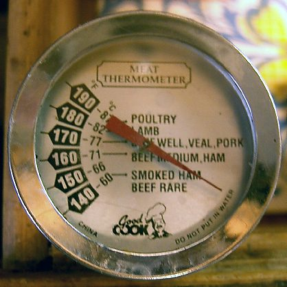

Factor = desired portions / original portions Edible yield % = edible / purchased x 100 Example: 1 kg purchased, 800 g edible -> 80% Cost per portion = total cost / portions Round carefully (spices are not linear)